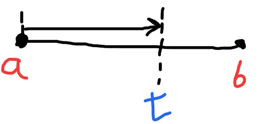

What is interpolation?
It is about getting values between 2 already existing points by providing a value normally called 't' where it is between 0 - 1. As 't' represents the progress from the first value to the second value
